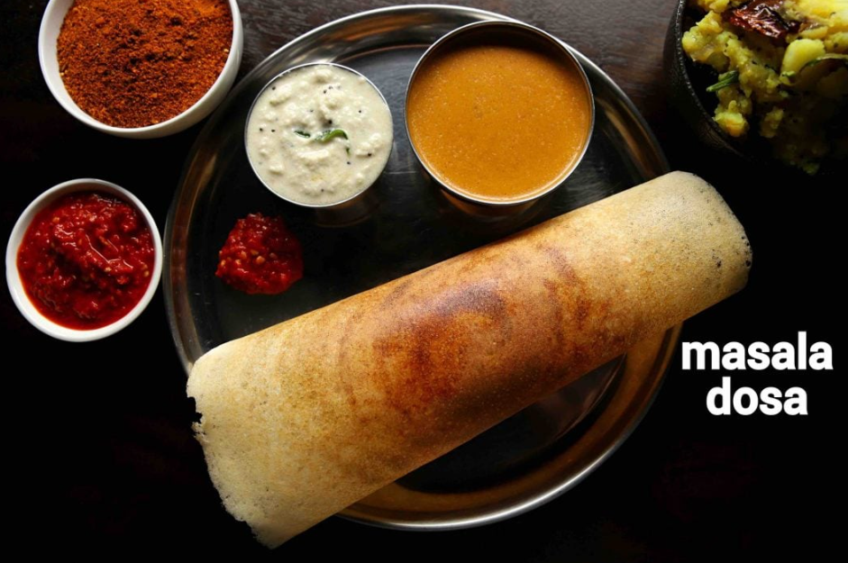

Favourite Dish Recipe
Masala Dosa Recipe
Ingredients
For batter:
- 3 cup sona masuri rice
- ½ tsp methi / fenugreek seeds
- water, for soaking
- 1 cup urad dal
- 2 tbsp toor dal
- 2 tbsp chana dal
- 1 cup poha / avalakki, rinsed
For aloo bhaji:
- 2 tbsp oil
- 1 tsp mustard
- 1 tsp urad dal
- 1 tsp chana dal
- 1 dried red chilli
- few curry leaves
- pinch hing / asafoetida
- 2 chilli, finely chopped
- 1 onion, sliced
- ¼ tsp turmeric
- 1 tsp salt
- 3 potato, boiled & mashed
- 2 tbsp coriander, finely chopped
- 2 tbsp lemon juice

INSTRUCTIONS
masala dosa batter preparation:
- firstly, in a large bowl take 3 cup sona masuri rice and ½ tsp methi.
- rinse well and soak in enough water for 4 hours.
- in another bowl take 1 cup urad dal, 2 tbsp toor dal and 2 tbsp chana dal.
- rinse well and soak in enough water for 2 hours.
- after soaking dal for 2 hours, drain off the water and transfer to the grinder. you can also grind in mixi if you do not have access to a grinder.
- add water as required and blend to smooth paste.
- scrape sides. the smooth and fluffy batter will be ready after 40 minutes.
- transfer the batter to a large vessel and keep aside.
- in the same grinder add soaked rice and 1 cup rinsed poha.
- add water slowly and scrape the sides. blend to a coarse paste.
- transfer the rice batter to the same urad dal batter.
- mix well making sure everything is well combined.
- ferment in a warm place for at least 8 hours or until the batter doubles in volume. if you are living in a cold climate, then you can place the batter in the warm oven (just heat the oven until it turns slightly warm and then turn off) to ferment.
- once the batter is well fermented, mix gently, without disturbing the air pockets.
- transfer 4 cups of fermented batter to a small bowl and add 1 tsp salt.
- mix well until the salt is well combined. masala dosa batter is ready. keep aside.
aloo bhaji preparation:
- firstly, in a large kadai heat 2 tbsp oil and splutter 1 tsp mustard, 1 tsp urad dal, 1 tsp chana dal, 1 dried red chilli, few curry leaves, pinch hing.
- now add 2 chilli and 1 inch ginger. saute well.
- also, add 1 onion and saute until onions shrink slightly.
- further, add ¼ tsp turmeric and 1 tsp salt. saute well.
- now add 3 potato and mix well, mash slightly making sure everything is well combined.
- turn off the flame and add 2 tbsp coriander and 2 tbsp lemon juice.
- mix well and aloo bhaji for masala dosa is ready. keep aside.
masala dosa preparation:
- firstly, add a ladleful of batter on hot tawa.
- spread as thin as possible making a crispy dosa.
- take 1 tsp of butter and spread uniformly.
- also, place 2 tbsp of prepared aloo masala in the centre.
- roast until the dosa turns golden brown and crisp.
- scrape the sides of dosa and roll the dosa.
- finally, masala dosa recipe is ready to serve with coconut chutney and sambar.